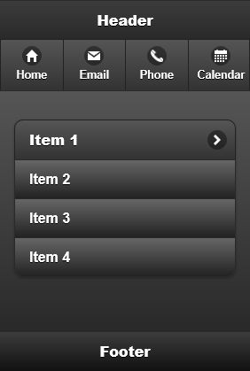
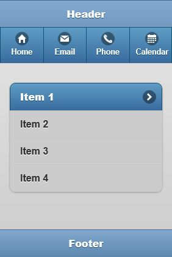
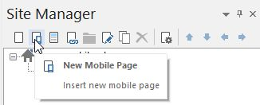
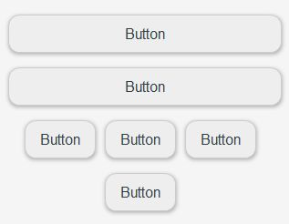
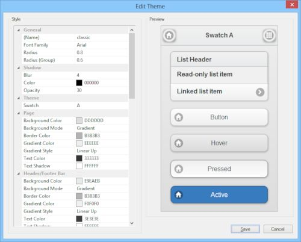

Mobile Web Design using jQuery Mobile (DEPRECATED)
WYSIWYG Web Builder has a built-in designer for mobile web pages. This makes it easy to create a mobile version of your pages without the need to external software. Mobile pages have a different toolset and creating a mobile website is slightly different that a regular website.
Mobile pages are based on jQuery Mobile (http://jquerymobile.com/), which is a framework for creating mobile web applications. jQuery Mobile works on all popular smartphones and tablets. jQuery Mobile has been designed to work within a responsive context. All the widgets are built to be 100% flexible in width to fit easily inside a responsive layout.
WYSIWYG Web Builder has a built-in designer for mobile web pages. This makes it easy to create a mobile version of your pages without the need to external software. Mobile pages have a different toolset and creating a mobile website is slightly different that a regular website.
Mobile pages are based on jQuery Mobile (http://jquerymobile.com/), which is a framework for creating mobile web applications. jQuery Mobile works on all popular smartphones and tablets. jQuery Mobile has been designed to work within a responsive context. All the widgets are built to be 100% flexible in width to fit easily inside a responsive layout.
You can view a live demo here:
https://www.wysiwygwebbuilder.tk/support/jquerymobile/
Related tutorial:
Responsive Web Design in WYSIWYG Web Builder
https://www.wysiwygwebbuilder.tk/support/jquerymobile/
Related tutorial:
Responsive Web Design in WYSIWYG Web Builder
Creating a mobile web page
In the Ribbon or Site manager click 'New Mobile Page'.
In the Ribbon or Site manager click 'New Mobile Page'.

To make a web page responsive it needs to be constructed in a different way. Unlike in standard WYSIWYG Web Builder layouts where you can drag & drop objects anywhere and where objects have a fixed size and position, mobile objects need to adjust to the width of the screen. In most cases this means that the object will use the full width of the page. But it's also possible to set 'full width' to false in which case the objects will be 'inline', so they have a fixed width. By default all objects are placed next to each other (they are floating in the document), but there is also a layout grid available to arrange objects in rows and columns.
Another difference is the styling of objects. Unlike in a standard page, all jQuery mobile objects are styled by themes and swatches.
You can create and modify themes with the Mobile Theme Manager, available in the Tools menu.
IMPORTANT NOTE:
jQuery Mobile is a third party script library. Unfortunately it has not been updated since 2014, so it is becoming obsolete. If you want your pages to be future proof, then please consider to use layout grids or standard pages with breakpoints instead.
Another difference is the styling of objects. Unlike in a standard page, all jQuery mobile objects are styled by themes and swatches.
You can create and modify themes with the Mobile Theme Manager, available in the Tools menu.
IMPORTANT NOTE:
jQuery Mobile is a third party script library. Unfortunately it has not been updated since 2014, so it is becoming obsolete. If you want your pages to be future proof, then please consider to use layout grids or standard pages with breakpoints instead.

Note that the workspace will initially be smaller and the toolbox will get different tools (although many will look familiar). You can still drag & drop objects from the toolbox to the page, but you cannot control the exact position of the object because it will be added to the 'flow 'of the page.
That means that the first object will be in the upper left corner of the page and the next object will be right after it. If the object is set the full width then the next object will be below the object.
That means that the first object will be in the upper left corner of the page and the next object will be right after it. If the object is set the full width then the next object will be below the object.

You can control the alignment (left, center, right) of the objects in the page properties. Containers like Collapsible, Layout Grid and Tabs have their own alignment option.
To get an good idea what a mobile page will look like, drag & drop a Header, Footer and a Listview to the page. You will notice that the header will automatically be added at the top of the page and the footer at the bottom. The Listview (and all other objects) will be added between the header and the footer. More advanced layouts can be created with the Layout Grid.
To get an good idea what a mobile page will look like, drag & drop a Header, Footer and a Listview to the page. You will notice that the header will automatically be added at the top of the page and the footer at the bottom. The Listview (and all other objects) will be added between the header and the footer. More advanced layouts can be created with the Layout Grid.

The theme of the page and objects can be set in the Page Properties. Most objects also have an option to change the theme swatch to give it a different style than the rest of the page.
Now you can preview the result in the browser and notice that all objects fill up the entire width of the browser!
If you have linked to other jQuery Mobile pages then you can also see the page transitions.
Note
WYSIWYG Web Builder also supports Responsive Web Design, where you can design different layouts within the same page.
Now you can preview the result in the browser and notice that all objects fill up the entire width of the browser!
If you have linked to other jQuery Mobile pages then you can also see the page transitions.
Note
WYSIWYG Web Builder also supports Responsive Web Design, where you can design different layouts within the same page.
